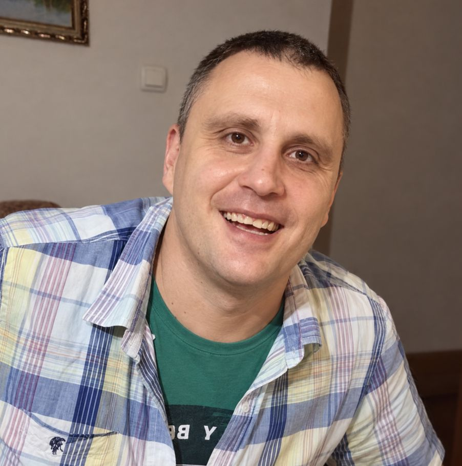

Stepan Stepanovic
Bioinformatics · Computational Chemistry · Mass Spectrometry
Hello! I’m Stepan Stepanovic, a computational chemist and bioinformatician currently working at Geneva University Hospitals (HUG). I develop computational workflows for microbiome sequencing data and integrate microbiome, diagnostic, and clinical data using statistical analysis and machine learning.
Previously, I was a Maître-assistant at the University of Geneva, where my research combined LC–MS-based pharmacometabolomics, cheminformatics, and machine learning. My work included xenobiotic metabolism, molecular property prediction, mass-spectrometry data analysis, and computational approaches to small-molecule characterization.